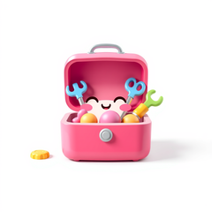

SugarCli
CLI presentation helpers

sugar-cli renders CLI output that matches the rest of the SugarCraft stack: StatusLine, Banner, Section, Stage, HelpText, Frame and Logo, all sharing one width budget and one theme. It is a library, not a framework: each presenter takes data and returns a string, so it drops into any Composer project without a Symfony Console or argv layer. The output shape follows charmbracelet/fang (Go); the code is original PHP.
Install
composer require sugarcraft/sugar-cli "@dev"Requires PHP 8.3 or newer and ext-mbstring. Install note: sugarcraft/* packages track dev-master, and the monorepo sets minimum-stability: dev with prefer-stable: true. Mirror that pair in your own root manifest, or a stable-only install fails to resolve.
Quickstart
Every presenter returns a string with a trailing newline left to the caller. Without an explicit theme, each one uses Theme::detect(), so the same script prints plain text when its output is piped. The runnable version of a full page is examples/cli-page.php (see Examples below).
Concepts
Each presenter is a static method that returns one rendered block. Nothing is written to a stream, so the caller decides where the output goes and tests can compare the returned bytes directly. The shared pieces are a theme (a palette of styles keyed by status level), a width budget (an int, AutoWidth::Auto or null), and a color profile that decides how much of the palette reaches the output.
The width budget resolves through the exported COLUMNS variable, falling back to 80 cells. Values that are not a plausible width are discarded. An over-long message is clipped with …, and the status glyph or tree glyph is never clipped. Banner is the exception: it cuts its lines at the box edge, because the border is the truncation marker.
Tasks
Print a --version banner
echo Banner::title('myapp', 'v1.2.3', Theme::charm()), "\n";Pass a preset when the app should look the same on every terminal. Leave the theme out to use the auto-detected palette.
Show numbered steps with sub-steps
echo Stage::step('Reading config', 1, 3), "\n";
echo Stage::subStep('checking PATH', isLast: false), "\n";
echo Stage::subStep('checking composer cache', isLast: true), "\n";
echo Stage::subStepWithProgress('downloading', 40, 100, frame: 0), "\n";step() takes the message first, then the current and total counts. Both counters are clamped before drawing, so a negative counter prints an empty bar and a counter above the total prints a full one. Pass frame: to subStepWithProgress() when the output must be byte-stable, such as in a golden test. Without it the spinner walks the wall clock.
Render a --help page
echo HelpText::render(
usage: 'myapp [flags] ',
sections: [
'Commands' => ['setup' => 'configure your environment', 'serve' => 'start the dev server'],
'Flags' => ['-v, --verbose' => 'enable verbose logging'],
],
description: 'A demo of the help page.',
width: 80,
), "\n"; $sections is keyed by section title, then by entry label, with the description as the value. A section whose array is empty renders no block. width: null disables wrapping. A width below 1 throws \InvalidArgumentException.
Draw a full-screen frame
$frame = Frame::new()
->withTitle('dashboard')
->withStatus('q quit · r refresh')
->withTheme(Theme::nord());
echo $frame->render($body, cols: 100, rows: 30);render() returns exactly rows lines. It throws below 6 rows, which is the chrome overhead. Body rows past rows - 6 are dropped, so the frame never overflows the terminal.
Tint a logo and fall back to plain text
use SugarCraft\Core\Util\ColorProfile;
$logo = Logo::sugarcraftNarrow()->withColor('#ff5fd2');
echo $logo->render(ColorProfile::detectTerminal(null, STDOUT));The wordmark is 66 cells wide, and sugarcraftNarrow() is the same wordmark without the box border for terminals narrower than that. Passing a detected profile to render() re-quantises the tint, and a profile without color support removes it.
API reference
| Class | Method | Description |
|---|---|---|
| StatusLine | success(msg, ?theme, width = Auto) | Render a success line (error, warn, info and prompt have the same shape) |
| Banner | title(title, subtitle = '', ?theme, ?border, ?width) | Bordered title banner. Embedded escapes, control bytes and newlines are stripped, so the title is a single display line |
| Section | header(label, ?theme, leftPad = 2, width = Auto, rune = '─') | Label plus fill rule. A non-null width is a hard cap, and an over-long label ends in … |
| Section | rule(?theme, width = Auto, rune = '─') / subHeader(label, ?theme, indent = 4, width = Auto, rune = '·') | Bare divider / indented nested heading |
| Stage | step(message, current, total, ?theme, glyph = '▸', width = Auto) | Numbered step line. Counters are clamped to 0 and to the total |
| Stage | subStep(message, ?theme, isLast = false, indent = 2, width = Auto) | Tree-style sub-step. isLast switches the branch glyph |
| Stage | subStepWithProgress(message, current, total, ?theme, isLast = false, indent = 2, width = Auto, ?frame) | Sub-step with a progress bar when total is above 0, or a spinner when it is 0. frame pins the spinner glyph |
| HelpText | render(usage, sections, description = '', ?theme, width = Auto, usageLabel = 'USAGE', titleCase = true) | Full --help page. Wraps to width. null never wraps. A width below 1 throws |
| HelpText | renderRows(rows, ?theme, width = Auto) / renderPage(page, width = null) | One two-column block, stacked below MIN_DESCRIPTION_WIDTH (16 cells) / a pre-composed page. renderPage() does not re-wrap unless a width is passed |
| Theme | ansi() / plain() / detect(?env, ?stream) / auto(?bg) / detectFor(stream) | Colorful palette / no styling / palette downgraded to the stream's color profile / palette that follows the OSC 11 reply the app requested (without a message it is ansi()) / detection for a given stream |
| Theme | charm() / dracula() / nord() / catppuccin() / byName(name) / PRESET_NAMES | Fixed color presets, the case-insensitive name resolver, and its roster |
| Theme | build() / withColorProfile(ColorProfile $profile) | Fluent ThemeBuilder (all seven slots required before build()) / downgrade any theme to a color profile |
| Frame | new() → withTitle(t) / withTitleText(t, style) / withStatus(s) / withBorderStyle(style) / withTheme(?theme) / withPlainBorder() → render(body, cols, rows) | Exactly-rows full-screen box with SGR-preserving ingress sanitation. Throws below 6 rows, and the width floors at 4 |
| Logo | sugarcraft() / sugarcraftNarrow() / fromAscii(art) / withColor(color) / fits(cols) / render(?profile) | Box-drawing wordmark (66 cells) / the same wordmark without the box / custom art, where newlines are the layout / replaceable tint / whether the art fits a width / styled render |
| AutoWidth | Auto (enum case) | The shared width sentinel. Auto resolves COLUMNS, an int is exact, and null means no cap |
Configuration
sugar-cli has no config file and no options object. Its behavior is set by the theme, color profile and width arguments you pass, and by these environment variables, which the default theme and width resolution read.
| Variable | Type | Default | Effect |
|---|---|---|---|
COLUMNS | int (exported) | 80 | Width used by AutoWidth::Auto. Must be exported to be seen by PHP. Values outside 1 to 10000 are discarded |
NO_COLOR | any non-empty value | unset | Drops color and keeps bold and faint. Resolves to the Ascii profile. An empty value counts as unset |
CLICOLOR_FORCE / FORCE_COLOR | CLICOLOR_FORCE: any non-empty value except 0, so false forces. FORCE_COLOR: true, yes or on, or a level of 1 or more. 0, an empty value and other words do not force | unset | Forces color on, even through a pipe or with TERM=dumb |
CLICOLOR | 0 or other | unset | BSD convention. 0 drops color unless forced |
TERM | string | unset | dumb emits no escape bytes unless color is forced |
The full list of variables that Theme::detect() reads is NO_COLOR, CLICOLOR, CLICOLOR_FORCE, FORCE_COLOR, TERM, COLORTERM, TERM_PROGRAM, WT_SESSION, TMUX, STY, GOOGLE_CLOUD_SHELL, CI, GITHUB_ACTIONS, GITLAB_CI and BUILDKITE. Pass your own array as Theme::detect($env) to test a case without touching the process environment.
Keys and input
sugar-cli reads no keyboard input and handles no key bindings. It is output-only. An interactive program that needs keys should use sugar-core for its event loop and call sugar-cli for the rendering.
Theme and color
A theme is a Theme value with seven slots: success, error, warn, info, prompt, accent and muted. Each slot holds a SugarCraft\Style\Style. Theme::ansi() is the default palette. Theme::plain() gives every slot a bare Style::new(), so bold and faint are removed as well.
The presets are charm(), dracula(), nord() and catppuccin(). Theme::byName() resolves any of them, plus ansi, plain and auto, case-insensitively. Theme::auto($bg) adapts to the background only when the app passes the parsed OSC 11 reply it asked for with Cmd::requestBackgroundColor(). Without a message it returns ansi(), so byName('auto') never adapts by itself.
Theme::detect() downgrades the palette to what the output can show, through sugar-core's ColorProfile ladder. CLICOLOR_FORCE and FORCE_COLOR are resolved first and outrank a non-tty pipe and TERM=dumb. Otherwise a non-tty stream or TERM=dumb emits no escape bytes. Every presenter called without a theme uses detect(). An explicit theme renders exactly as given, so apply the downgrade yourself with $theme->withColorProfile(ColorProfile::detectTerminal(null, STDOUT)).
Two seeded styles bypass the downgrade and emit SGR even through a pipe: the slate border on Frame::new() (#64748b) and the tint from Logo::withColor(). Call Frame::withTheme() to route the border through the theme's muted slot, or withPlainBorder() to drop the border styling.
Examples
examples/cli-page.phpbuilds one fang-style page with every presenter: aBanner, twoSectionheaders,Stagesteps and sub-steps,StatusLinerows and aHelpTextpage. It uses the Dracula theme, downgraded to what STDOUT can show. Run it withphp examples/cli-page.php.examples/logo.phpprints the built-in SugarCraft logo, a custom ASCII logo built withLogo::fromAscii(), and a tinted custom logo. The tint is applied only when the profile supports 256 colors.
Both scripts read vendor/autoload.php, so run them from the library root after composer install.
Testing
cd sugar-cli
composer install
vendor/bin/phpunitThe suite covers each presenter with golden ANSI snapshots (sugar-testing's assertGoldenAnsi), the theme resolution order including the dumb-terminal veto, the width resolution rules, and a smoke run of both examples as child processes. Golden files are create-only: delete a fixture and re-record it to accept an intended render change.
Troubleshooting
The output has no color when I expect it
Check whether the stream is a terminal. A piped or redirected STDOUT gets no escape bytes, and TERM=dumb does the same. Set CLICOLOR_FORCE=1 to keep color through a pipe, or pass an explicit theme, which renders as given without the downgrade.
The width ignores my terminal size
sugar-cli reads COLUMNS only when it is exported. A bash-private COLUMNS is invisible to PHP. Run export COLUMNS in your shell profile, or pass an int width explicitly. Values outside 1 to 10000 are ignored, and the 80-cell fallback applies.
A status line is cut with an ellipsis
The message is clipped to the width budget, and the glyph is kept. Pass width: null to render the full message with no cap, or a wider int. At a budget too small for the glyph and separator, only the glyph remains.
Frame::render() throws
The frame needs at least 6 rows for its border, title, divider and status chrome. A smaller $rows throws \InvalidArgumentException. Check the rows argument against the terminal height before rendering.
A preset name throws
Theme::byName() matches case-insensitively against Theme::PRESET_NAMES. An unknown name throws \InvalidArgumentException and lists the valid names in the message. Catch it at the boundary if the name comes from user input.
Architecture
Every presenter follows the same pipeline. The width argument resolves through WidthProbe, which applies the AutoWidth sentinel. Caller text passes through SafeText at ingress, which strips escape and control bytes except for the SGR sequences a styled title is allowed to carry. The remaining text is measured in display cells, not bytes, and then clipped by Clip. The glyph and the bar are reserved before the message is measured, so they are never clipped.
Themes are immutable: withColorProfile() returns a new Theme, and ThemeBuilder collects the seven slots before building one. Theme::detect() memoizes its result per environment snapshot, so a test that changes NO_COLOR sees the new value rather than a stale answer.
Upstream mapping
| charmbracelet/fang (Go) | sugar-cli (PHP) |
|---|---|
| Help screen layout (usage, flag groups, description) | HelpText::render(), renderRows(), renderPage() |
Color profile detection (colorprofile.Detect) | Theme::detect(), backed by sugar-core's ColorProfile |
| Styled title and status output | Banner, StatusLine, Section |
| Not ported: the argv and cobra integration | Out of scope. sugar-cli takes data and returns strings |
The surface inventory is in the README. The port mapping is in docs/MATCHUPS.md.
Changelog and versioning
sugar-cli has no separate changelog file. Its history is the commit log of the sugar-cli/ directory in the monorepo, and the Composer package tracks dev-master, so consumers pin to a commit rather than a tagged release. Read the commit history for what changed and when.
Related
- sugar-core provides
ColorProfileand the width primitives. - sugar-style provides
StyleandBorder. - candy-code uses
HelpTextfor its help page.
Demos.
The library's CLI page example rendered as a VHS-recorded GIF. Regenerated automatically on every push that touches the source.